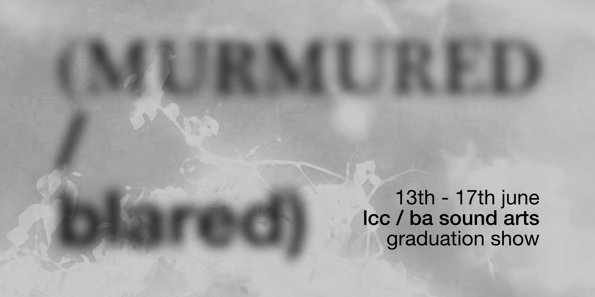

Murmured / Blared
Performance Evening Lineup
Tata Cheng
Tata Cheng is a Hong Kong sound artist based in london working with compositions and improvisational performances to explore deep ecology and human’s experiences in wilderness. Tata is interested in how wilderness survival practices can alter human sensation and how human could be immersed to nature as one. He also interested in improvisational sound performances and theatre.
Fraser Scowen
Fraser Scowen is an instrument maker and sound artist based in South East London. His practices focuses on the creation of unique electronic instruments, emphasising an expanded approach to sound synthesis through the exploration of materials, experimental circuitry, time based processes and esoteric interfaces. These instrument works encompass gallery pieces, live performance and recordings. Under the moniker Maison Phantasy he is currently developing a range of experimental electronic instruments.
Lynxie Who
Lynxie Who is the solo project of Polish sound artist Rysia Anna Kaczmar, currently based in London. Rooted in the fringes of noise, experimental sound design, and tactile electronics, her performances explore the limits of voice, distortion, and handmade circuitry. Blending DIY electronics, circuit-bent toys, and raw vocal manipulations, Lynxie crafts soundscapes that buzz, rupture, and pulse with visceral intensity. Her work investigates themes of identity, memory, folklore, and psychological fragmentation - often drawing from personal and collective experiences. Through saturated soundscapes and abrasive textures, Lynxie Who navigates the unstable spaces between catharsis and chaos. Performance, ritual, and glitch become tools for both disruption and healing. Operating at the intersection of the intimate and the volatile, she invites listeners into a visceral experience - where softness distorts, noise becomes a story, and emotion is not just expressed, but embodied.
Daniel Marin
Daniel Marin is a sonic artist and experimental electronic musician based in London. He likes to play with electronic devices and experiment through different genres of music and forms of art, always trying to go a little bit further and finding new fields and techniques which are innovative. Currently focused in composing electronica and ambient pieces, he has been involved in diverse projects in sound art and sound design with different organisations from around the globe. The sound emerging from the modular synths and tape recorders he uses, brings us tracks full of immersive atmospheres and rich textures, creating an abstract world to submerge in.
TROJANOVSKX
TROJANOVSKX is a London-based artist whose work explores the philosophical concept of duality, deconstructing its structures through the intersection of sound, light, movement, and technology. Their practice challenges the causality between movement and sound while examining the evolving relationship between the human body and machines. By employing cybernetic micro-systems, e-textiles, motion sensors, and digital interfaces, they craft immersive, interactive experiences that blur the boundaries between artist, artwork, and audience. Over the past year and a half, their practice has expanded to incorporate motion capture interfaces and spatial sound installations, transforming body movement into real-time audio-visual compositions. By integrating motion sensors and digital control systems, they create responsive environments where human presence shapes sound and light patterns. Their performances often evoke ritualistic atmospheres with non-linear rhythmic structures. Recently, their work has ventured into cyberpunk aesthetics to explore the decomposition of identity, reflecting on how technology mediates physical presence and movement. This inquiry challenges the boundaries between human agency and machine autonomy, inviting audiences to question the role of technology in shaping modern embodiment. Recurring themes in TROJANOVSKX’s work include identity, abstraction, geometry, and spirituality. Through experimental soundscapes, bodily noise, and abstract visuals, they investigate the dynamic interplay between technology and the human form, fostering immersive, multi- sensory experiences that provoke shifting perceptions of presence and embodiment.
Lucas Yoshimura Wood
Lucas Yoshimura Wood, born in London and half Japanese, thinks about and makes noise. They perform playing with no input and feedback techniques as well as creating installations exploring the relationship between noise and light/moving image. They use improvisation and lofi recording in their work to evoke themes centred around time, memory, light and dreams. In this performance they present se-mi an immersive embodied improvisation with the space. In the dark, using handmade light sensitive circuits and various light sources they aim to create an artificial insect soundscape. Light, motion, space becoming modes for connectivity in an almost guided listening.
my grey leaving
‘my grey leaving’ is the solo project of Benjamin Thorn, creating blurry ambient-shoegaze through improvisation with guitar, diy software effects, and field recordings. Through exploring the aesthetics of ambivalence and ambiguity, their music shifts from distorted walls of sound to quiet loops that faintly wither. Their music is available to listen on Bandcamp, Nina, and other streaming platforms.
Miles Lukoszevieze
Miles Lukoszevieze is a sound artist, composer and improviser residing in London. His work spans the rich tapestries of noise, electroacoustic, experimental rock and improvisation, realised through various monikers including the visceral noise rock band Red Mar (est.2018) and post-industrial outfit Vostok (est.2020), as well as collaborative projects with artists such as Graeme Smith, That Travis, Henry Cyer, Harry Fisher, Mai Nguyen-Tri and more. His solo work realises a distinct intimacy of fragmented narratives and emotive dichotomies, where disparate threads weave a soundscape of timbral ambiguity, noise, colour, and abstraction.
Qianhui Sun / Sanki
Qianhui Sun (Sanki) is a sound artist and experimental music performer whose work blends ambient textures with elements of traditional Chinese culture. Her live performances often incorporate randomness and audience interaction, creating unique and unrepeatable soundscapes that explore the dynamic relationships between sound, body, and space.